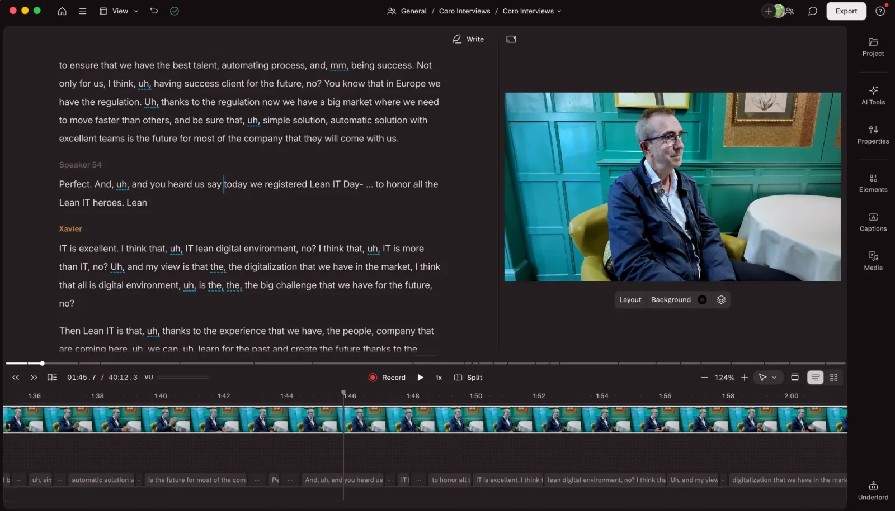
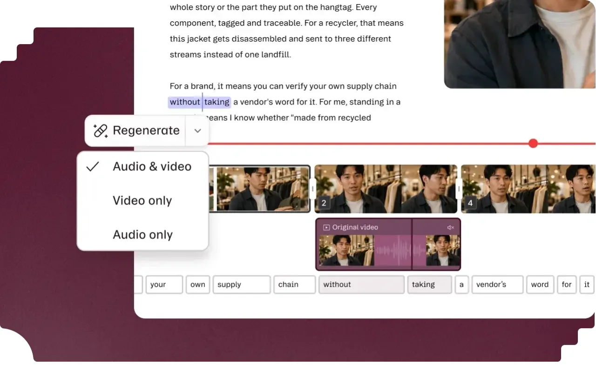

Riverside vs Descript: which should you use for your podcast?
Riverside is the better tool for recording, and Descript is the better tool for editing. For most business podcasts, that is the whole answer.
I use both every week at MBMS Podcast Studio, and clients often ask which one they should pay for. The confusion is understandable. Riverside has added editing tools, and Descript has added remote recording, so on paper they now do the same job. In practice, each is still clearly stronger at the thing it started with.
Here is how they compare, where each one falls short, and how to decide.
Riverside: the remote recording specialist
Riverside is a browser-based recording studio. Guests click a link, and each person is recorded locally on their own device. The files upload in the background, so a shaky internet connection doesn’t ruin the recording.

Pros
- Reliable remote recording. Local recording is the core of the product and is included on every plan, even the free one. For interviews with guests in different cities or countries, this is the main reason to choose Riverside.
- Separate tracks for every speaker. Each person gets their own audio and video file, which makes editing, levelling and cutting clips much easier.
- Easy for guests. There’s nothing to install for most guests. That matters when you’re interviewing a busy CEO who won’t download software.
- High-quality video. Paid plans record in up to 4K, which gives you room to crop into vertical social clips.
- Free trial. Paid plans come with a 14-day trial, so you can test a real session before committing.
Cons
- The editor is basic. Riverside’s editing and AI clip tools are useful for quick turnarounds, but they are not a full production environment. For a polished episode, most producers export and edit elsewhere.
- Recording hours are capped. Multi-track recording is limited per month on each plan, and busy teams can hit the limit.
- Uploads depend on guests. If a guest closes the tab before their local file finishes uploading, you can lose part of their track. A good producer checks this before anyone leaves.
- Pricing has shifted. Plan names and prices have changed several times, so check the current pricing page rather than relying on older reviews.
Descript: editing as easy as a document
Descript turns your recording into a transcript, and you edit the audio and video by editing the text. Delete a sentence from the transcript and it disappears from the episode.

Pros
- Text-based editing is fast. Cutting a rambling answer, moving a section or trimming an intro takes seconds. Non-editors on your team can make changes without learning a timeline.
- Strong clean-up tools. Filler-word removal, Studio Sound for improving room audio, and Eye Contact correction handle a lot of routine polishing.
- Good for clips and social content. Finding a quotable moment is as simple as searching the transcript, which suits turning one episode into several clips.
- Built-in AI assistant. Underlord, Descript’s AI co-editor, can handle tasks like drafting show notes, suggesting clips and tightening edits.
- Collaboration. Business plans add shared projects, brand kits and team controls, which helps if several people touch each episode.

Cons
- Usage is metered two ways. Since late 2025, plans are limited by media minutes and separately by AI credits. Multi-camera podcasts use minutes quickly, because every uploaded file counts.
- Transcript editing has limits. It’s brilliant for structural cuts, but fine audio work still needs a proper look at the waveform. Over-trimming can make conversations sound clipped.
- Remote recording is secondary. Descript can record remote guests, but it’s not the product’s main strength. For important interviews, I’d still record in Riverside.
- It can feel heavy. Large video projects can be slow on older machines.
Pricing at a glance
Both tools have a free plan, and both start at around $24 a month on annual billing. Prices are in US dollars, so UK prices and VAT may differ.
| Plan level | Riverside (annual billing) | Descript (annual billing) |
|---|---|---|
| Free | 2 hours of multi-track recording (one-off), 720p, watermarked | 60 media minutes a month, 720p, watermarked |
| Entry paid | Pro, $24/month | Hobbyist, $16/month (10 media hours) |
| Most popular for producers | Pro or Grow, $24–$34/month | Creator, $24/month (30 media hours, 4K) |
| Teams | Business, custom pricing | Business, $50/month per user |
Monthly billing costs more on both. Check each company’s pricing page before you buy, because both have restructured their plans recently.
Sources: Riverside pricing summary, Descript pricing summary.
Honourable mentions
Riverside and Descript will get you a good episode, but the best-looking and best-sounding shows usually pass through a couple of specialist tools as well.
- DaVinci Resolve for colour grading. Neither Riverside nor Descript offers serious colour control. Resolve is the industry standard for grading, and it’s how you make footage from different cameras or locations look like one consistent show. The free version is enough for most podcasts.
- Adobe Podcast for cleaning audio. Its Enhance Speech tool is excellent at rescuing difficult recordings, such as echoey rooms, laptop mics or background noise. It’s worth running problem tracks through it before the edit, especially for remote guests who didn’t have a proper microphone.
Which should you choose?
Choose Riverside
if most of your guests are remote and recording quality is your biggest worry. It’s the safer bet when you only get one shot at an interview.
Choose Descript
if you record in person or in a studio and want to edit quickly yourself. It’s the better fit for teams turning episodes into lots of clips and posts.
Use both
if you’re serious about the podcast as a marketing channel. This is what I do for clients: record remote guests in Riverside, then bring the separate tracks into Descript for editing, clean-up and clips. Each tool does what it’s best at, and the combined cost is still less than a single hour of studio time.
If you’d rather not manage either tool, that’s exactly what MBMS Podcast Studio is for. We handle recording, editing, distribution and clips, so you can focus on the conversation.
Get in touch